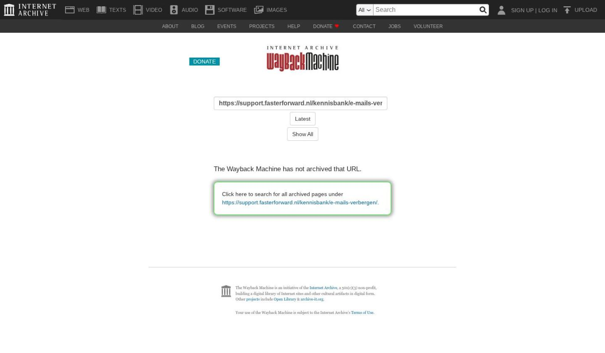

Figlo Hypotheken koppeling instellen en gebruiken

Tekstinhoud
Figlo Hypotheken koppeling instellen en gebruiken | Support
---
Figlo Hypotheken koppeling instellen en gebruiken
Als je voor een klant een hypotheek wilt berekenen en een adviesrapport wilt opstellen, doe je dit met adviessoftware, ofwel een adviespakket. Figlo Hypotheken is zo'n adviespakket dat is verbonden met eBlinqx, waardoor gegevens eenvoudig worden gedeeld.
De koppeling werkt twee kanten op. Als eerste verstuur je de klantgegevens van eBlinqx naar Figlo. Na de adviseringswerkzaamheden stuur je het advies weer naar eBlinqx. Vanuit eBlinqx vraag je de hypotheek aan via HDN.
Als de koppeling is ingericht in eBlinqx, volg je onderstaand stappenplan om gegevens heen en weer te sturen tussen eBlinqx en Figlo.
1. Voeg dossier toe aan Figlo
2. Stuur klantgegevens naar Figlo
3. Instellingen Figlo aanpassen
4. Maak berekening en stuur aanvraag naar eBlinqx
5. Verwerk aanvraag in eBlinqx
Gegevens die worden verstuurd naar Figlo
1. Voeg dossier toe aan Figlo
In het dossier ga je naar het tabblad Export. Als je nog niet eerder een klantdossier in eBlinqx naar Figlo hebt gestuurd, zie je in een klantdossier de knop 'Voeg dossier toe aan Figlo'. Klik op deze knop om een verbinding te leggen tussen het eBlinqx dossier en Figlo.
Als je gebruikt maakt van Ockto en je hebt in het dossier een brondata bestand ontvangen dan kan je eerst kiezen of je de gegevens van eBlinqx of van Ockto wilt gebruiken om vervolgens via de knop het dossier toe te voegen aan Figlo.
2. Stuur klantgegevens naar Figlo
Aan de rechterkant van het scherm vink je aan van welke personen je de gegevens naar Figlo wil exporteren. Nadat je de personen hebt geselecteerd, gebruik je de knop 'Geselecteerde item(s) bijwerken' om de gegevens van de personen naar Figlo Hypotheken (Figlo Advisor) of Figlo Start te sturen.
Als je dit eerder hebt gedaan, maar er sindsdien persoonsgegevens zijn gewijzigd in eBlinqx, gebruik je de knop 'Geselecteerde item(s) bijwerken' om de gegevens opnieuw naar Figlo te exporteren.
Klik vervolgens op één van de knoppen om Figlo Advisor of Figlo Start te openen.
3. Instellingen Figlo aanpassen
Wanneer je voor de eerste keer in Figlo Start komt nadat je een dossier uit eBlinqx hebt geëxporteerd, moet je gelijk de instellingen in Figlo aanpassen. Hiermee zorg je dat de verbinding tussen eBlinqx en Figlo altijd correct werkt. In eBlinqx moet de API hiervoor correct ingeregeld staan. Dit kan je niet zelf instellen, stuur hiervoor een e-mail naar support-eblinqx@blinqx.tech.
In Figlo Start stel je de koppeling met eBlinqx in via Externe koppeling – Instellingen adviseur – Elements:
De URL is de URL waarop je inlogt in eBlinqx De API Gebruikersnaam en API wachtwoord moeten wij aanleveren bij jou.
Voor informatie over de software van Figlo, bekijk de supportinformatie van Figlo of neem contact op met Figlo.
Lees hier het Figlo artikel over koppeling met eBlinqx
4. Maak berekening en stuur aanvraag naar eBlinqx
Wanneer je het hypotheekadvies in Figlo Hypotheken hebt afgerond, kom je in de 'Do' fase. Hier ga je naar de HDN berichtenmanager.
In het overzicht met offerteaanvragen, gebruik je de knop 'Versturen via Elements' om het de hypotheekaanvraag naar eBlinqx te sturen.
5. Verwerk aanvraag in eBlinqx
Je gaat nu de aanvraag verwerken in eBlinqx. Het AX bericht dat je zojuist vanuit Figlo Hypotheken hebt verstuurd, komt binnen in de HDN inbox op je eBlinqx dashboard.
Lees dit artikel om te weten hoe je een HDN bericht verwerkt.
Let op: Indien je gebruik maakt van Figlo via MijnGeldzaken dien je het HDN bericht handmatig te exporteren en importeren.
Gegevens die worden verstuurd naar Figlo
Persoonsgegevens Contactgegevens
Eerste persoon, partner, kinderen, voor- en achternaam, initialen, land, burgerservicenummer, verwachte levensdur, pensioendatum, opleidingsniveau, burgerlijke staat van eerste persoon Telefoonnummer, e-mailadres, straat, huisnummer, plaatsnaam, provincie, land, postcode, geografische lengte en breedte
Laatste update: 15 oktober 2025
Was deze informatie nuttig?
Ja Nee